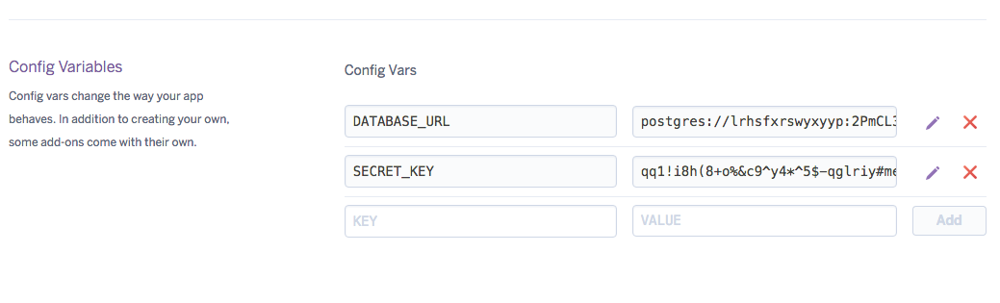

Push your Django App to Heroku
Mohsin Mahmood edited this page on May 22, 2019
Heroku is a cloud application platform, it is a PaaS (Platform-as-a-service) service. It allows you to deploy your web application from your localhost to cloud so that your application could be commercialized and could get production ready.
1. Preparing your application
Copy the Project folder separately for deployment.
2. Initialize Git Repositor
- Install Git
- Press CTRL+R
- Type
cmdand click OK - Navigate to project folder
- Make sure your are in the directory where the
manage.pyexists
git config --global user.name "Your Name"
git config --global user.email "you@youraddress.com"
git config --global user.email "you@youraddress.com"
git init
3. Add Files To Git
git add --all
git commit -m "Commit Message"
git push
4. Activate Virtual Environment
Activating virtual environment.
manage.py # The configuration file.
venv/
Scripts/
activate
Run these command to activate the environment.
cd venv/Scripts/
activate
If virtual environment not already exists. Run these commands on command prompt.
pip install virtualenv
- Install all the required libraries that your project required via
pipcommand. - Plus install the following dependencies in your virtual environment.
pip install gunicorn
pip install django-heroku
pip install python-decouple
django-heroku: official package by Heroku which made our deployment simple.
5 Modify Setting.py file
Now, In app/settings.py file add below content
#import os
import django_heroku
from decouple import config
import dj_database_url
At the end of the setting.py file add this line also.
django_heroku.settings(locals())
Now we need to hide the SECRET_KEY from the deployment code.
For this, add this line of code before
SECRET_KEY = "Djfhslkdfsjf*(skdf0suerjwehksjdf"
SECRET_KEY = config('SECRET_KEY')
Move your actual SECRET_KEY to the .env file that we are going to create.
6. Create a file .env
Now, run a command in your terminal.It will create a file .env in your app directory.
touch .env
Add your
SECRET_KEYfrom setting.py to.envfile.
7. Adding more to setting.py
Do this in your app/settings.py.
STATICFILES_DIRS = [
os.path.join(BASE_DIR, "static")
]
Make sure you do not have this command in setting.py file already. If so remain it as it is. For more info
STATIC_ROOT = os.path.join(BASE_DIR, 'staticfiles')
8. Static file serving for web apps
To serve static assets I use the WhiteNoise project. To install: pip install whitenoise
For more info
Do this in your app/settings.py file.
#...
#'django.middleware.security.SecurityMiddleware',
'whitenoise.middleware.WhiteNoiseMiddleware',
#'django.contrib.sessions.middleware.SessionMiddleware',
#'django.middleware.common.CommonMiddleware',
#...
STATICFILES_STORAGE = 'whitenoise.storage.CompressedManifestStaticFilesStorage'
9. Create a Procfile
Open the command prompt in your directory and type this command.
Make sure you type
Procfilecorrectly (casesensitve)
touch Procfile
Open the Procfile and add this line in the file.
web: gunicorn <project name>.wsgi
10. Run Django Server
Type this command in the command promt to open the django server.
python manage.py runserver
run this command too.
python manage.py migrate
If your site is working correctly then move to next step.
11. Creating a file requirements.txt
This command create a file requiremets.txt and add all the dependencies that your application needed while pushing to heroku.
pip freeze > requirements.txt
add dependency requests==2.21.0 to the requirements.txt file.
12. Heroku Sign up
Start a heroku account — Sign up.
Install Heroku Toolbelt commands
After installing heroku toolbelt your terminal will support all the heroku commands.Open your terminal as administrator and run this code
heroku login
login to your heroku account via terminal
Enter your Heroku credentials.
Email: example@gmail.com
Password (typing will be hidden):
Authentication successful.
Inside the project root, create a Heroku App:
heroku create
Adding a Heroku app to Git remote
heroku git:remote -a <APPNAME>
Open the heroku dashboard and navigate to your new created app.
In setting tab, add the config vars: SECRET_KEY

13. Update Git repository
git add --all
git status # to view all the changes
git commit -m "ready to push"
14. Finally Push to Heroku
git push heroku master